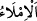
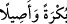
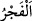
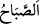
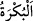
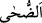
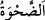
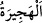
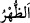
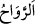
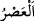
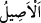

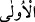
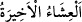
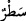
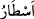
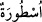
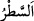
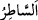
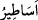

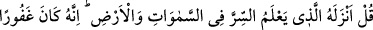
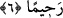
“Kendisine sabah-akşam okunmakta olan,” yâni o efsaneler başkası tarafından
yazılıp kopyalandıktan sonra Hz. Muhammed (s.a.)’in okuyanın ağzından ezberlemesi
için O’na okunur. Çünkü O ümmî idi ve kimseden okuma yoluyla onları öğrenmeye güç
yetiremiyordu.
“__WORD__ aslında başkasının yazması için söz söylemek demektir.
“__WORD__ gündüzün başı ve sonu/sabah akşam demektir. Âyetteki anlamı ise devamlı
veya insanlar sabahleyin etrafa dağılmadan ve akşam da evlerine çekildiklerinde gizlice
demektir.
Dırâmu’s-sıkt’ta şöyle der: “Günün ilk vakti “__WORD__ (tan vakti)”dir. Sonra “__WORD__(sabah)”, sonra “__WORD__ (sabahın erken vakitleri)”, sonra “__WORD__, sonra “__WORD__ (kuşluk
vakti)”, sonra “__WORD__, sonra “__WORD__, sonra “__WORD__ (öğle)”, sonra “__WORD__, sonra “__WORD__,
sonra “__WORD__ (ikindi)”, sonra “__WORD__ (gurup vakti)”, sonra “__WORD__ __WORD__ (akşam)”, sonra
şafağın kızıllığı kaybolunca “__WORD__ (yatsı)” olur.”
“Öncekilere âid masallardır.” Rüstem ve İsfendiyar’ın sözleri gibi öncekilerin
yazdığı hurâfe ve efsanelerdendir, kitaplarda yazılı olan geçmiş topluluklara âid
efsanelerdir, dediler.
“__WORD__ kelimesi, “__WORD__ın çoğulu olan “__WORD__ın çoğuludur. Ya da “__WORD__ kelimesinin
çoğuludur. el-Kamûs’ta der ki: “__WORD__ kitap ve ağaç gibi bir şeyin dizisi, çizmek,
yazmak ve kılıçla bir şeyi kesmek demektir. Kasabın satırı (__WORD__) da buradan
gelmektedir. “__WORD__ ise belli bir düzeni olmayan sözler demektir.”
6. (Rasûlüm!) De ki: Onu göklerde ve yerdeki gizlilikleri bilen Allah indirdi.
Şüphesiz O, çok bağışlayıcıdır, engin merhamet sâhibidir.
Ey Muhammed! Onları reddetmek ve hakkı ortaya koymak için “De ki: Onu göklerde
ve yerdeki gizlilikleri” gaybı “bilen Allah indirdi.” Çünkü Kur’ân fesâhatinden dolayı
hepinizi susturup âciz bıraktı. O, geleceğe dâir gaybî haberler veya yalnızca sırları
bilen Allah’ın bilebileceği gizli şeylerin bilgisini de ihtivâ etmektedir. O halde nasıl
oluyor da onu öncekilerin efsaneleri kabul ediyorsunuz?
“Şüphesiz O, çok bağışlayıcıdır, engin merhamet sâhibidir.” Yâni Allah Teâlâ ezelî
ve ebedî olarak bağışlamakta ve rahmette bulunmaktadır. Bu sebeple söylediklerinizden
dolayı sizi cezâlandırmaya kemâl-i kudreti olduğu ve sizin de azâbın üzerinize
boşaltılmasını hak etmenize rağmen bunda acele etmez. Burada Kur’ân’a iftirâda
bulunan dalâlet ehlinin sözlerinden vazgeçip Allah’a tevbe etmeleri hâlinde Allah’ın